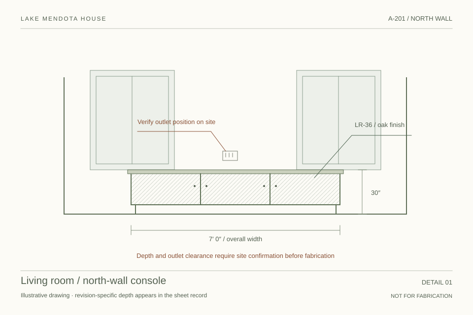

Understand & explore.
A room scan establishes the existing conditions. A rendering carries the visual intent. Material references and room notes explain why the design is taking this shape.
Room Proof / 05
Return to round fourFounder review
22 October 2026
Round five



“Please confirm the depth and outlet clearance before we fabricate.”
Sam Ortiz, carpenter · OBS-07 · fictional site returnThe room carries its working history.
You asked where the drawings, renderings, scans and Field team belong. This pass makes them part of the job’s continuous paper, with the same room and the same design question connecting them.
The left-weighted visual story.
The job flow in the right margin.
The dense 36-line room sheet.
The return to your place.
Survey → concept → drawing → scope → site return.
One illustrated room, explored in depth.The design process on the paper2
The missing piece was a home for the design work itself. We have placed a room’s visual development before its item decisions, and the team’s site work beside the schedule and selections.
A room scan establishes the existing conditions. A rendering carries the visual intent. Material references and room notes explain why the design is taking this shape.
A drawing opens as a working plate. Its revision, client visibility and contractor issue history remain distinct. A frozen set records what a named person was meant to receive.
The contractor gets a practical work copy. A question from site returns to the room and drawing it concerns, where the studio can record a next step before anything changes.
Room story → Design development → Client approvals → Schedule → FF&E → Site & team → Financials → Closeout → Record
The two new chapters make room for the process. Deep work unfolds within them.Try the job3
Start with the room spread. Open a drawing, follow its question to the field and return to the same paper. Each scene below opens a different place in one fictional job. Saved drafts and observations remain in this browser.
The frame has not finished loading. Try “Open this scene full size”, and check that job.html sits beside this file.
One scene is loaded at a time. The sample is fictional. The page sends, signs, uploads and grants nothing. Drawings and survey plates are illustrative, not construction documents.
Capability map4
The source already contains much of this capability. The proposal is how the design, commercial and field work meet in one room’s story. Read the source mapping.
| Act | Current source | This proposal & its boundary |
|---|---|---|
| Room scans | Current room-linked scan references and Room View geometry. Capture retains room identity and evidence provenance. | A survey plate with a missing measure, capture note and drawing connection. Illustrative geometry; no scan processing. |
| Renderings & material direction | Current inline room concept-render upload, labeled “Concept · not installed”. | A room story and material ribbon linked to FF&E. Material board editing and render-version management remain future work. |
| Drawing review | Current Plan Room, revision history, current-print pointer and older prints. | A-101 / A-201 plates, revision selector, comparison, zoom and a local D study. CAD/PDF editing and upload are outside this mockup. |
| Client visibility & issue sets | Current client visibility is separate from frozen issues, purposes and named recipients. | Local visibility toggle, frozen recipient draft and retained old set. No send, token delivery, signature or receipt confirmation. |
| Team & site access | Current shared roster, trade roles and studio-only access card. | Named people by phase; scope and drawing holdings alongside. No access codes or live permission changes. |
| Trade work order | Current room-by-room work-order prose, distinct authorization/engagement, with no client price or markup. | A scope with an explicit hold and a scoped Field preview. Contract signing, bid editing and draw administration remain future work. |
| Site evidence & review | Current Field capture carries photos/voice/provenance; Field Desk supports proposed effects and review. | Drawing-anchored observation and studio follow-up. Cross-linking it to the exact drawing and scope is a proposed connection. |
| Item approval, notes & purchasing | Retained from round four, mapped to the current portal in that round. | Still working locally: per-item review, correspondence, orders, acknowledgment, receiving and bought-already records. |
| FF&E at operational depth | Retained from round three: 80 job lines, 36 in the living room. | Same dense working sheet, with contextual return from the drawing to the item and back. |
Review notes5
The questions are in the order we care about. Notes save in this browser as you type. Download them as Markdown whenever you like. The notes are kept separate from the prototype’s own saved data.